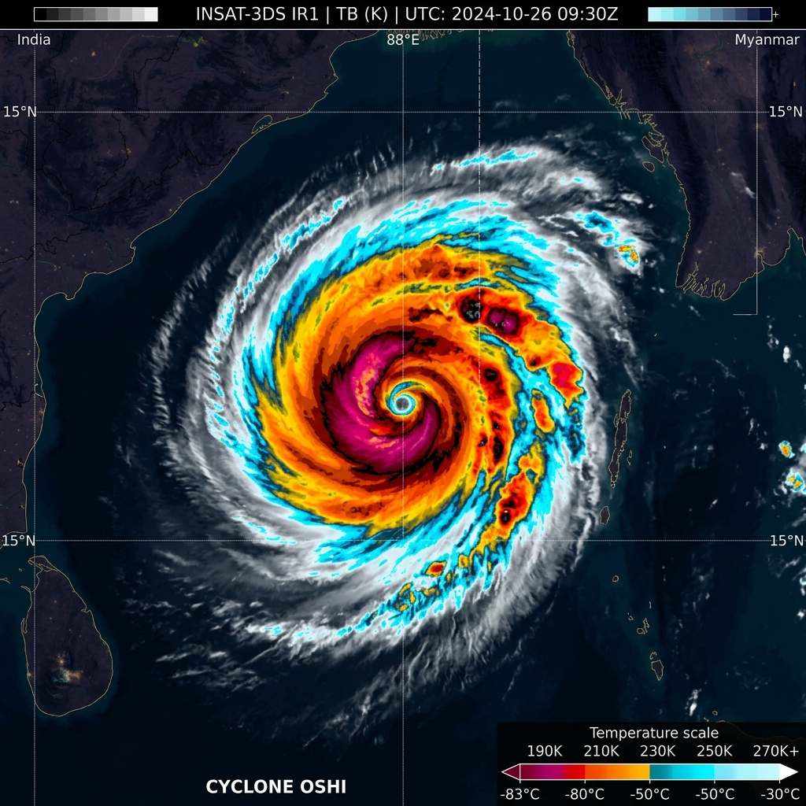

MULTI-SPECTRAL SATELLITE RECEPTOR COMPARISON
INSAT-3DS • 1KM GSD
CHANNEL: IR1 (10.8µm) THERMAL INFRARED
Calibrated Temperature Scale: 188.2K (-84.9°C) to 298.6K (+25.4°C)
CHANNEL: VIS (0.65µm) HIGH-RES OPTICAL
Albedo Normalization: Optical Reflectance (0.92) • Clear-sky Eye Contrast: High
ConvLSTM SPATIO-TEMPORAL ARCHITECTURE PIPELINE
INPUT: [B, 12, 4, 512, 512] ➔ OUTPUT: [B, 6, 4]
| LAYER / BLOCK | OPERATIONS | TENSOR DIMENSIONS | PARAMETERS |
|---|---|---|---|
| 01. Input Sequence | 12 Historical Frames (T-12h to T0) Multi-Spectral | [B, 12, 4, 512, 512] | Raw Data |
| 02. Feature Extractor | ResNet-50 Convolutional Spatial Backbone | [B, 12, 128, 64, 64] | 23.5M |
| 03. Temporal Encoder | Bi-Directional GRU Spatial-Temporal Block | [B, 256, 32, 32] | 14.2M |
| 04. ConvLSTM Recurrent | 4-Layer Convolutional LSTM Cell (Kernel 3×3) | [B, 512, 32, 32] | 48.2M |
| 05. Dual Attention | Spatial & Atmospheric Steering Vector Attention | [B, 512, 32, 32] | 8.4M |
| 06. Dense Trajectory Head | Multi-Head MLP Output (Lat, Lng, Vmax, MSLP) | [B, 6, 4] | 2.1M |
ConvLSTM replaces internal linear matrix multiplications with convolution filters at input, forget, and output gates. This preserves the 2D spatial vortex morphology while propagating temporal kinematics across 12-hour multi-spectral time steps.
MULTI-SOURCE SATELLITE & NUMERICAL RECEPTORS
SYNCHRONIZATION MATRIX
| SENSOR / PLATFORM | AGENCY | CHANNELS / DATA TYPE | RESOLUTION | STATUS |
|---|---|---|---|---|
| INSAT-3DS Imager | ISRO / IMD | IR1 (10.8µm), VIS (0.65µm), WV (6.7µm) | 1.0 km | NOMINAL (100%) |
| INSAT-3DR Sounder | ISRO / IMD | 18-channel Atmospheric Temperature & Moisture | 10.0 km | DELAYED (+47m) |
| Himawari-9 AHI | JMA Tokyo | 16-Band Optical / Thermal Imager | 0.5 - 2.0 km | NOMINAL (99.1%) |
| DWR Radar Paradip | IMD Odisha | S-Band Radar Reflectivity & Radial Velocity | 250 m | NOMINAL (99.9%) |
| IBTrACS Reanalysis | NOAA NCEI | 1880-2025 NIO Ground Truth Tracks | 3-hourly | SYNCHRONIZED |
DISASTER INTELLIGENCE & EARLY WARNING DISPATCH
RISK SCORE: 78 / 100
PRIMARY RISK FACTORS (AI RISK ENGINE EVALUATION):
RAW METEOROLOGICAL TELEMETRY PAYLOAD (JSON)